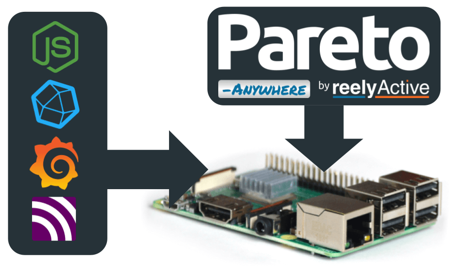
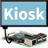

Install software on a Raspberry Pi for IoT Development with `pareto-anywhere`.
Last updated: 2024-01-08
Our step-by-step guide to installing several open-source software packages that compliment `pareto-anywhere` to create a pipeline for IoT development.
The TL;DR (Too Long; Didn't Read)
Learn how we at reelyActive install software for an IoT Development Stack.
- What will this accomplish?
- A Raspberry Pi with a lean, headless OS, and the latest version of Node.js, ready to run `pareto-anywhere` and `barnowl-hci`.
- Why open-source?
- We believe in the power of open source to drive innovation and collaboration.
- What are the components in the end-to-end pipeline?
- The main components are to capture wireless signals (barnowl-hci), process those signals (pareto-anywhere), store them (InfluxDB2), and finally to analyze them (Grafana).
Prerequisites
-
Raspberry Pi
A Raspberry Pi
Setting up the Raspberry Pi Step 1 of 2
Use Raspberry Pi Imager to select a Raspberry Pi device, disk image, and apply important common settings.
- Why Raspberry Pi Imager?
- It is officially supported by the Raspberry Pi Foundation and works on various OSes, including Raspberry Pi OS itself. It manages all of the various images available for different devices, ensuring you'll be installing the best available option for your selected device.
- Why Pi OS Lite?
- It includes all the key ingredients for headless operation while keeping the disk image small.
- Why OS customisation?
- Unless you have a monitor and keyboard for the Raspberry Pi, good luck with the first connection otherwise!
- Is an SD Card the only option?
- While this tutorial supposes using an SD Card, it will work equally as well when flashing a mounted compute module.
Initializing the Raspberry Pi Part 1
Before installing new software on a Raspberry Pi, it is a good idea to update the package list and upgrade the installed packages to their latest versions; this ensures that you have the latest security updates and bug fixes.
-
Update the package lists and upgrade the packages with the command: sudo apt update && sudo apt upgrade
Create a new root user Part 2
For some of the changes to persist when using the Raspberry Pi Imager, a new user is created that will run pareto-anywhere and barnowl-hci.
The `reelyactive` user is created so that when we create a disk image, the default user that is created by the Raspberry Pi Imager does not replace the user needed to run all of the installed software.
-
Create the user with the command: sudo adduser reelyactive
-
Add the user to the `sudo` group with the command: sudo adduser reelyactive sudo
-
Log out from the terminal, and log back in with the newly created `reelyactive` user.
The remainder of the steps will be done with the `reelyactive` user.
 Install `git`
Part 3
Install `git`
Part 3
`git` is not installed by default on the Lite version of Raspberry Pi, and is required for cloning some github repositories.
- Install `git` with the command: sudo apt install git
 Install node-red, nodejs, and npm
Step 3 of 5
Install node-red, nodejs, and npm
Step 3 of 5
- What is nodejs?
- `nodejs` is the JavaScript runtime used to run `pareto-anywhere`.
- What is npm?
- `npm` is a package manager used by nodejs.
- What is node-red?
- `node-red` is a flow-based development tool for visual programming, useful for creating IoT applications based on triggers sent by `pareto-anywhere`.
- Are all of these required?
- nodejs and npm are required, and node-red is optional.
- Is this this only way to install nodejs and npm?
-
There are several ways to install nodejs and npm, depending on your environment. At reelyActive, we like the ease of use
of the node-red install script, which will guide you through the process of installing all three.
More information about installing `node-red` on a Raspberry Pi can be found at https://nodered.org/docs/getting-started/raspberrypi
Install `node-red`, `nodejs`, and `npm` with the following steps, using the install script from the node-red github repository.
-
Initialize the `node-red` installation script with the command: bash <(curl -sL https://raw.githubusercontent.com/node-red/linux-installers/master/deb/update-nodejs-and-nodered)
-
After node is installed, the script will prompt you for settings. Go ahead and select the defaults for all of the answers. Except don't setup user security. No username / password is required for `node-red`. Do not setup a passphrase.
-
Enable the nodered.service with the command: sudo systemctl enable nodered.service
-
Start the node-red service with the command: node-red-start
(rebooting the Raspberry Pi will also start the service, once enabled as above) -
With node-red now running on the Raspberry Pi, you can access the node-red editor by navigating to the Raspberry Pi's IP address on port 1880 in a web browser. (For example: http://pareto.local:1880)
 Install Influxdb2
Step 4 of 5
Install Influxdb2
Step 4 of 5
`influxdb2` is a time series database, useful for storing `dynambs` and `raddecs` collected by `pareto-anywhere`
- Is this the only way to install them?
- There are a few ways to install node and npm. At reelyActive, we install both by using the node-red install script, an interactive shell script which will guide you through the process of installing all three.
- Are all of these required?
- Node and npm are required, and node-red is optional.
Install Influxdb2 Part 1
While this still uses apt to install the package, it does require adding an additional archive to the list of apt sources.
-
Add the influxdb2 apt packge with the command:
wget -q https://repos.influxdata.com/influxdata-archive_compat.key && echo '393e8779c89ac8d958f81f942f9ad7fb82a25e133faddaf92e15b16e6ac9ce4c influxdata-archive_compat.key' | sha256sum -c && cat influxdata-archive_compat.key | gpg --dearmor | sudo tee /etc/apt/trusted.gpg.d/influxdata-archive_compat.gpg > /dev/null && echo 'deb [signed-by=/etc/apt/trusted.gpg.d/influxdata-archive_compat.gpg] https://repos.influxdata.com/debian stable main' | sudo tee /etc/apt/sources.list.d/influxdata.list -
Update the apt package list with the command: sudo apt update
-
Install influxdb2 with the command: sudo apt install influxdb2
-
Start influxdb2 as a service with the command: sudo service influxdb start
Configure Influxdb2 Part 2
-
Open a web browser and navigate to http://pareto.local:8086 to access the InfluxDB web interface.
-
Click the "Get Started" button to configure the newly installed InfluxDB instance.
-
Enter the following details to configure InfluxDB, and click "Continue":
- Username: admin
- Password: paretoanywhere
- Initial Organization Name: reelyActive
- Initial Bucket Name: pareto-anywhere
-
After the Initial User Setup is complete, there will be a message, "You are ready to go!". Below that, the `operator token` will be displayed. Be sure to copy this token, as it will be needed later when configuring `pareto-anywhere`.
Install pareto-anywhere Step 6 of 7
Use Raspberry Pi Imager to select a Raspberry Pi device, disk image, and apply important common settings.
- Is this the only way to install them?
- There are a few ways to install node and npm. At reelyActive, we install both by using the node-red install script, an interactive shell script which will guide you through the process of installing all three.
- What is a service?
- Additional details about setting up services on a Raspberry Pi can be found here: https://learn.sparkfun.com/tutorials/how-to-run-a-raspberry-pi-program-on-startup/all#method-3-systemd
Install `pareto-anywhere` Part 1
reelyActive's middleware for processing wireless signals. Additional detail https://reelyactive.github.io/diy/pareto-anywhere-pi/
-
Go to the home directory for the `reelyactive` user with the command: cd ~
-
Clone the pareto-anywhere github repo with the command: git clone --recurse-submodules https://github.com/reelyactive/pareto-anywhere.git
-
Change to the newly created `pareto-anywhere` directory with the command: cd pareto-anywhere
-
Add reelyActive's `barnacles-influxdb2` package to the pareto-anywhere project with the command: npm install barnacles-influxdb2
-
Initialize the project with the command: npm install
Setup `pareto-anywhere` to run as a service using `systemd` Part 2
There is a sample `units` file that is in the `pareto-anywhere` repo that can be copied and modified.
-
Copy the `units` file with the command: cp ./units/pareto-anywhere-pi.service ./units/pareto-anywhere-influxdb2-pi.service
-
Open the new file in an editor with the command: pico ./units/pareto-anywhere-influxdb2-pi.service
-
Edit the `WorkingDirectory` value. This will set the working directory use the `reelyactive` user that was created in an earlier step. The `reelyactive` user will be used to run the service regardless of any user being logged in.
WorkingDirectory=/home/reelyactive/pareto-anywhere
-
Edit the `User` value.
User=reelyactive
-
Edit the `ExecStart` value. This will execute the `influxdb2` script found in the `package.json` file of `pareto-anywhere`, sending collected `raddecs` and `dynambs` to the influxdb2 database.
ExecStart=/usr/bin/npm run influxdb2
-
Add the following environment variable within the `[Service]` section of the file. The value of INFLUXDB_TOKEN
Environment="INFLUXDB_TOKEN=z19KuC8DRXp9kS0l0CD0H3jDBfvI7n4F3S12BM8OXxEP9XbbYmdnEQxuxlnWSqWYoHi4w_BRQcgEv2Cz_ew-0w=="
-
With the values in the `units` edited, now copy the file over to the system directory with the command: sudo cp ./units/pareto-anywhere-influxdb2-pi.service /lib/systemd/system
-
Enable the pareto-anywhere service with the command: sudo systemctl enable pareto-anywhere-influxdb2-pi.service
-
Start the pareto-anywhere service with the command: sudo systemctl start pareto-anywhere-influxdb2-pi.service (or reboot the Raspberry Pi)
Port forwarding (Optional) Part 3
If you would like to access `pareto-anywhere` via port 80, you can use `iptables` to forward the traffic from port 80 to port 3001.
-
Install `iptables` with the command: sudo apt install iptables
-
Configure the port forwarding with the command: sudo iptables -t nat -A PREROUTING -p tcp --dport 80 -j REDIRECT --to-port 3001
-
To check that `pareto-anywhere` is running, and can be accessed via port 80, open a browser window, and going to the following URL: http://localhost/
Install barnowl-hci Step 6 of 7
`barnowl-hci` runs independently from `pareto-anywhere`, and will capture and forward all BLE signals captured on the Raspberry Pi's built-in bluetooth radio to `pareto-anywhere`.
- Is this the only way to install them?
- There are a few ways to install node and npm. At reelyActive, we install both by using the node-red install script, an interactive shell script which will guide you through the process of installing all three.
- What is a service?
- Additional details about setting up services on a Raspberry Pi can be found here: https://learn.sparkfun.com/tutorials/how-to-run-a-raspberry-pi-program-on-startup/all#method-3-systemd
Install `barnowl-hci` Part 1
-
Go to the home directory for the reelyactive user with the command: cd ~
-
Clone the barnowl-hci repo with the command: git clone --recurse-submodules https://github.com/reelyactive/barnowl-hci.git
-
Change directory to the newly created `pareto-anywhere` directory with the command: cd barnowl-hci
-
Initialize the node project with the commands: npm install
-
Assign the radio privileges with the node command: npm run privileges
-
Start `barnowl-hci` with the command: npm run forwarder
Setup `barnowl-hci` to run as a service using `systemd` Part 2
 Install Grafana
Step 6 of 7
Install Grafana
Step 6 of 7
Use Raspberry Pi Imager to select a Raspberry Pi device, disk image, and apply important common settings.
- Is this the only way to install them?
- There are a few ways to install node and npm. At reelyActive, we install both by using the node-red install script, an interactive shell script which will guide you through the process of installing all three.
- Are all of these required?
- Node and npm are required, and node-red is optional.
Full Instructions: https://grafana.com/tutorials/install-grafana-on-raspberry-pi/
-
Install Grafana with the command: sudo apt install grafana
-
Enable Grafana to run as a service with the command: sudo systemctl enable grafana-server.service
-
Start the Grafana service (or reboot the Raspberry Pi) with the command: sudo systemctl start grafana-server
Install MQTT Step 6 of 7
Use Raspberry Pi Imager to select a Raspberry Pi device, disk image, and apply important common settings.
- Is this the only way to install them?
- There are a few ways to install node and npm. At reelyActive, we install both by using the node-red install script, an interactive shell script which will guide you through the process of installing all three.
- Are all of these required?
- Node and npm are required, and node-red is optional.
Full Instructions: https://randomnerdtutorials.com/how-to-install-mosquitto-broker-on-raspberry-pi/
-
Install MQTT and its clients with the command: sudo apt install mosquitto mosquitto-clients
-
Enable MQTT to run as a service with the command: sudo systemctl enable mosquitto.service
-
Start the MQTT service (or reboot the Raspberry Pi) with the command: sudo /bin/systemctl start mosquitto
Testing Configuration
Check if the proper services are running with the following commands
Conclusion
You've taken a bare-bones Raspberry Pi OS Lite image and installed software that You can now access the Raspberry Pi remotely over SSH, and have installed a variety of services including node-red, influxdb2, pareto-anywhere, and barnowl-hci.

Tutorial prepared with ♥ by James Eberhardt.
You can reelyActive's open source efforts directly by contributing code & docs, collectively by sharing across your network, and commercially through our packages.Where to next?
Continue exploring our open architecture and all its applications.
- 
-
Configure a Raspberry Pi as a kiosk display
Our step-by-step guide to configure a Pi as a kiosk display that runs automatically on boot.
-

-
reelyActive Developers
Browse all developer documentation and tutorials.
-

-
reelyActive
Let's put things in context, one space at a time.